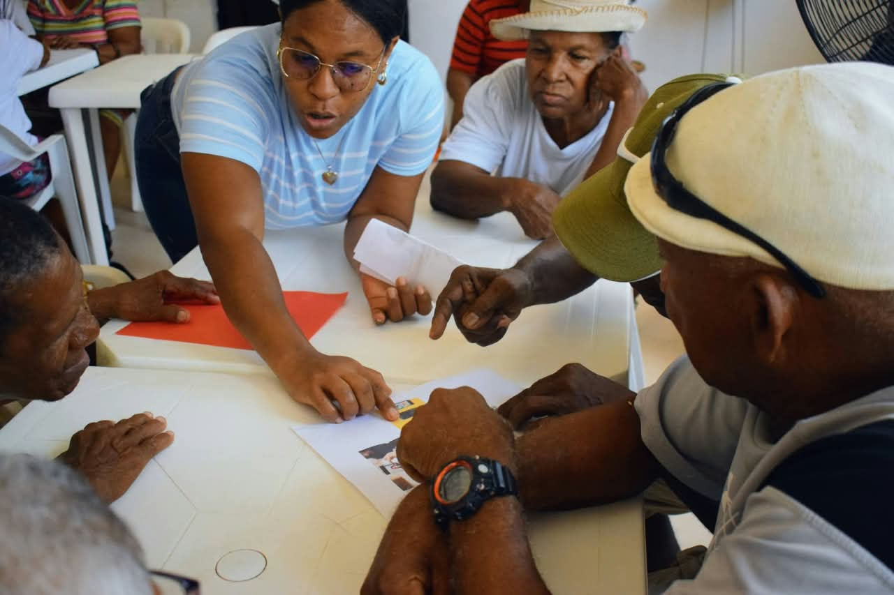
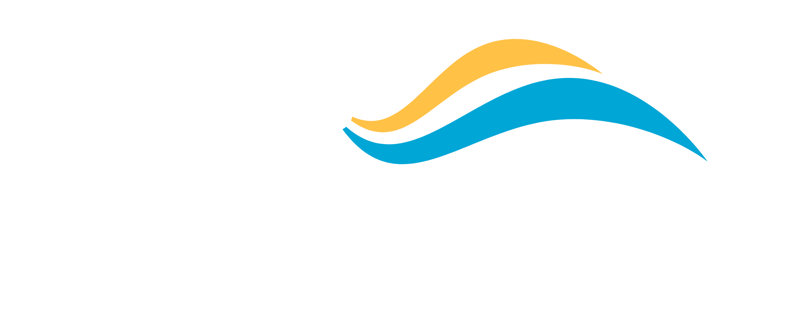

Inclusión digital
Herramientas y competencias para la vida.
Tecnología con sentido social
Construimos oportunidades desde el territorio.
Impulsamos la inclusión digital, la creación audiovisual y las iniciativas que conectan a las comunidades con nuevas oportunidades, fortaleciendo la cultura, la participación y el orgullo territorial.
Bocachica · Cartagena, Colombia
Creación audiovisual
Historias contadas desde el territorio.
Identidad territorial
Cultura, participación y memoria comunitaria.
Lo que hacemos
Oportunidades que nacen en la comunidad.
Trabajamos para acercar herramientas digitales y abrir espacios de creación y expresión que reconozcan las capacidades, experiencias y conocimientos de las comunidades insulares.
Ver todos los programas
Alfabetización e Inclusión Digital
Promovemos el aprendizaje y el uso práctico de herramientas digitales para personas de distintas edades, atendiendo necesidades reales de la comunidad.
Conocer el programa
Crea Cine Insular
Un espacio para explorar la creación audiovisual y contar historias vinculadas con la memoria, la cultura y la identidad del territorio.
Conocer el programaJuntos comunicamos ideas, conectamos propósitos y transformamos realidades.
Tecnología, cultura y participación al servicio de las personas y del territorio.
Quiénes somos
Conectamos tecnología, cultura y comunidad.
La Corporación Insular Digital impulsa iniciativas sociales y tecnológicas con enfoque territorial. Su propósito es contribuir al desarrollo de capacidades, ampliar oportunidades y abrir espacios para la participación comunitaria.
Creemos en una tecnología cercana, en el valor de las historias locales y en la construcción de iniciativas que reconozcan las capacidades de las comunidades.
Conoce nuestra identidad
COMUNICACIÓN COMUNITARIA
Las historias del territorio merecen ser contadas.
El canal de nuestros pueblos.
Una iniciativa de la Corporación Insular Digital.
Explorar TeleinsularConstruyamos oportunidades juntos.
Conoce nuestras iniciativas, participa en los procesos comunitarios y descubre cómo puedes apoyar el trabajo de la Corporación.